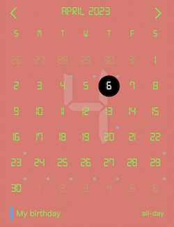
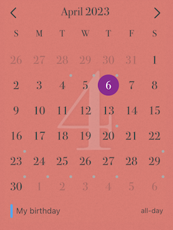
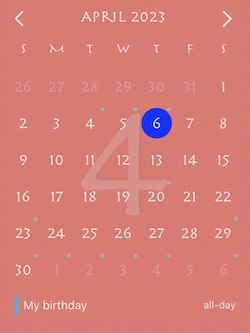
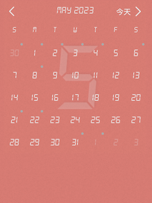
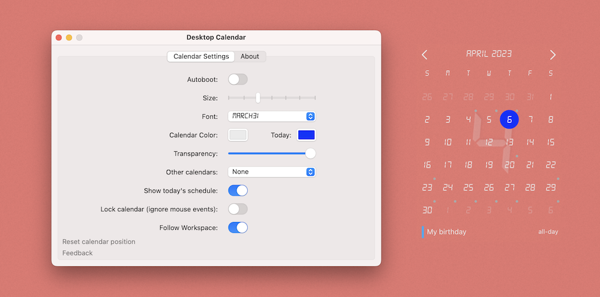

Desktop Calendar

Features
A calendar that can be placed on the desktop
You can set its size, color and even font
You can also set its transparency to make it less obvious
Not only can display the Gregorian calendar, but also the Chinese lunar calendar, Indian calendar, etc.
When the mouse event is ignored, it is like growing on the desktop~
You can set whether the calendar follows the change of the workspace
It can also display your calendar events synchronously
Perfectly compatible with multi-monitor switching display
    